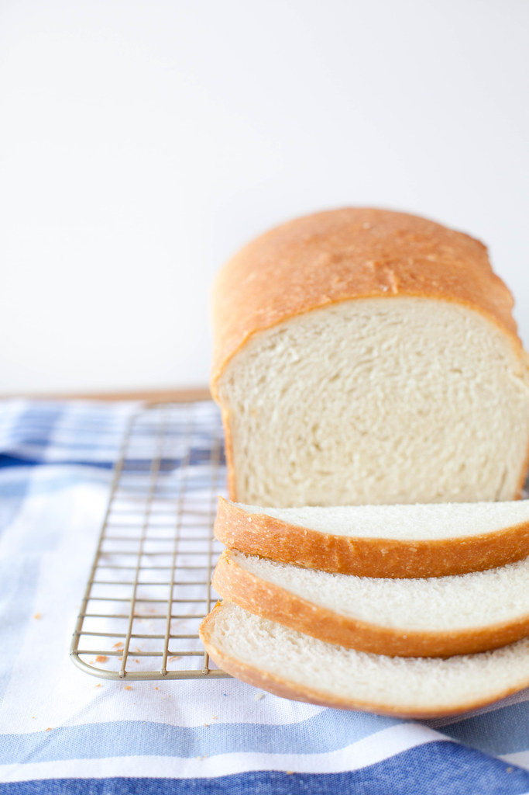

White Bread

Description
This is a quick white bread recipe that makes one loaf.
Ingredients
- 460g bread flour
- One and a half teaspoons of salt
- 2 tablespoons of unsalted butter
- 7g instant dry yeast
- One and a half cups of hot water
- 1 tablespoon white sugar
Steps
- Combine 240g of the flour and all of the salt in the bowl of a stand mixer. Mix the sugar into hot tap water( ~115 degrees fahrenheit ), then add the yeast and let sit to activate( 5 - 10 mins ). Microwave the butter for 30 seconds.
- Add the butter and water mixture to the standing mixer. Combine, then mix on low with a dough hook for 10 minutes.
- While mixing, grease a large bowl and bread pan with oil. Fill a small saucepan halfway with water and bring to a boil. Once the dough is smooth and not sticky, transfer to the bowl and coat in oil.
- Cover the bowl with plastic wrap, then slide it into the top rack of your oven( which is not on ). On the rack below that, place the saucepan of boiling water and close the oven. Let the dough rise for 45 mins.
- Remove the bowl from the oven and bring the saucepan of water back to a boil. Punch down the dough, form into a loaf and place it in the breadpan. Cover the breadpan with the plastic wrap and put it in the oven with the boiling water. Close the oven and let the dough rise for 40 mins.
- Remove the breadpan and saucepan from the oven and turn the heat on to 450 degrees fahrenheit. Bake for 10 minutes, then turn the heat down to 350 and bake for an additional 30 mins.